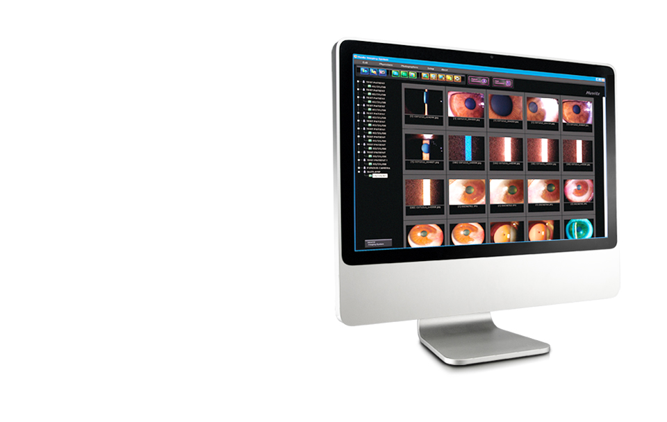

HIS-5000(의료용영상처리용장치ㆍ소프트웨어)
진단에서 관리, 프레젠테이션까지 쉽고 편리합니다
이미징 처리의 매니지먼트 시스템-휴비츠 HIS-5000
이 제품은 의료기기이며, 사용상의 주의사항과 사용방법을 잘 읽고 사용하십시오.
(심의번호 : 2013-I10-04-1443)
- 
제품소개
- Patient Management
- MS Access Database 기반의 HIS 시스템으로 다양한 검사정보를 쉽게 관리해 주며 상세 진단내역, 병력, 검사이력 등 다양한 컨텐츠를 제공하여 강력한 검색 기능을 지원합니다.
- Digital Camera
- 빠르고 안정적으로 영상을 처리할 수 있는 IEEE1394 인터페이스 방식으로 최대 해상도 1.45M Pixel 또는 2.00M Pixel 의 고화질 이미지를 구현합니다.
- Camera Control
- Progressive Scan 방식의 고성능 CCD 카메라를 활용하여, 슬릿램프에서 관찰하는 영상을 모니터 상에 실시간으로 디스플레이하고 이미지를 캡쳐 및 저장할 수 있습니다.
제품사양
| DIGITAL CAMERA | |
|---|---|
| Image Sensor | 1/2” Interline CCD |
| Image Size | up to 1,388 x 1,036 pixels |
| Cell Size | 4.65μm x 4.65μm |
| Resolution Depth | 8bit or 12bit Raw RGB, YUV 4 : 2 : 2 |
| Transmit Method | IEEE 1394 (6pin) |
| Transmit Speed | 400Mbps |
| Frame Rate | 15fps, 7.5fps, 3.75fps |
| Lens Mount | C-Mount |
| Photographing | External Trigger or Software Trigger |
| Dimension | 44mm (W) x 29mm (H) x 63mm (D) |
| Power Consumption | 3W(12V DC, from IEEE 1394 Cable) |
| HIS-5000 | |
| CPU | Pentium IV, 2GHz |
| Memory | 512MB(over 1GB recommended) |
| Video card | ATI Radeon 9200(128MB) or similar |
| System |
|
| Transmit method |
|
| Monitor | LCD or CRT (minimum resolution 1,280 x1,024 pixels, over 1,600 x 1,200 pixels recommended) |
| Designs and details can be changed without prior notice for improvements. | |